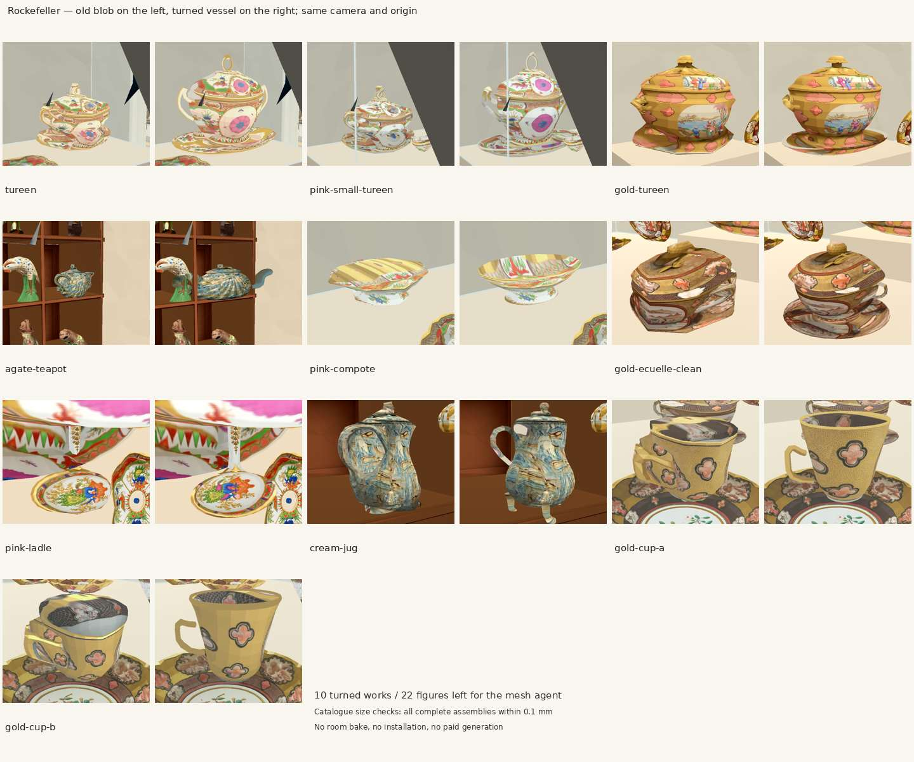
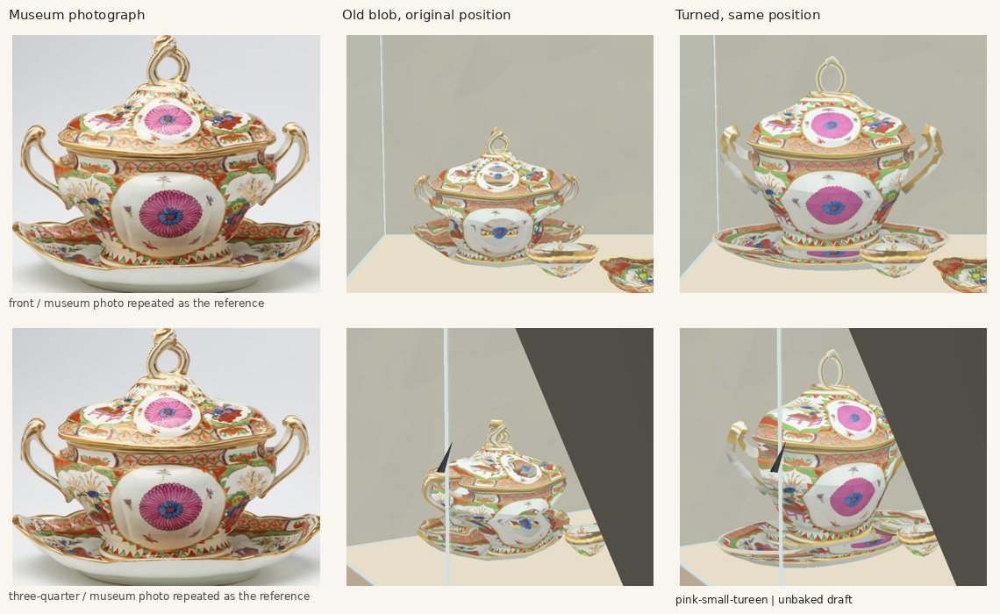
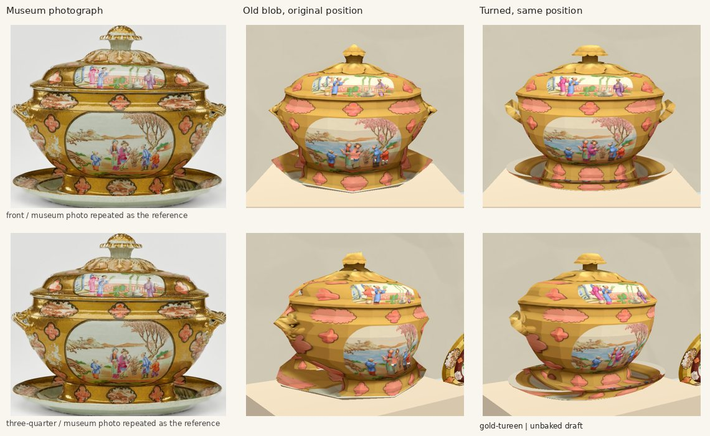
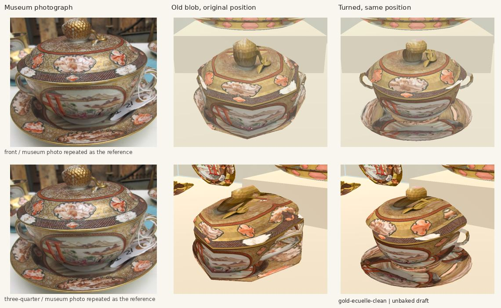
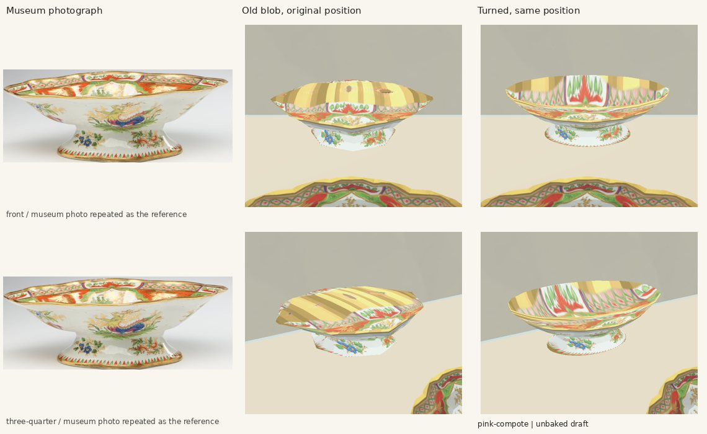
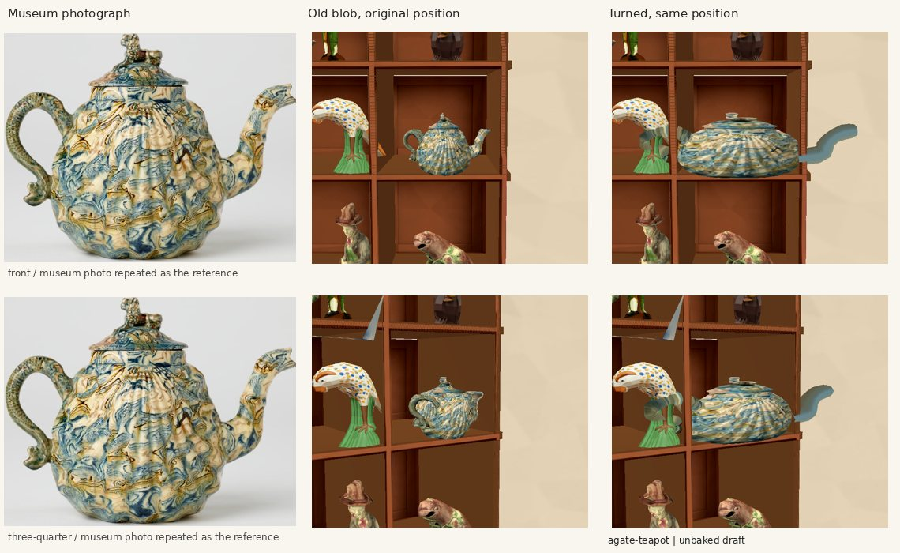
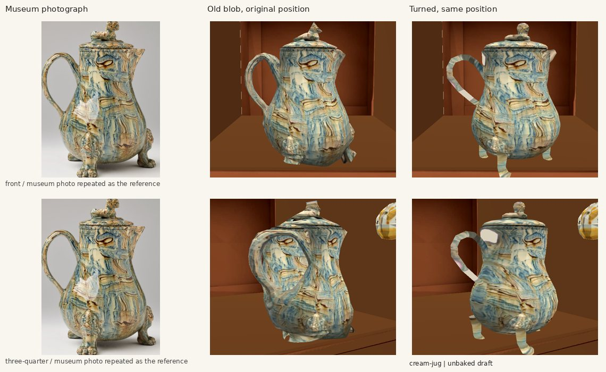
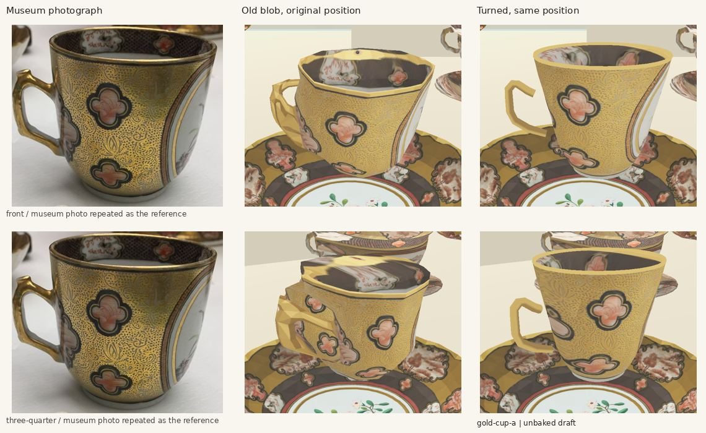
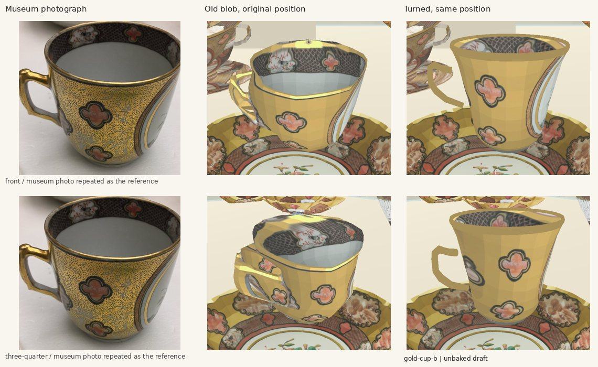
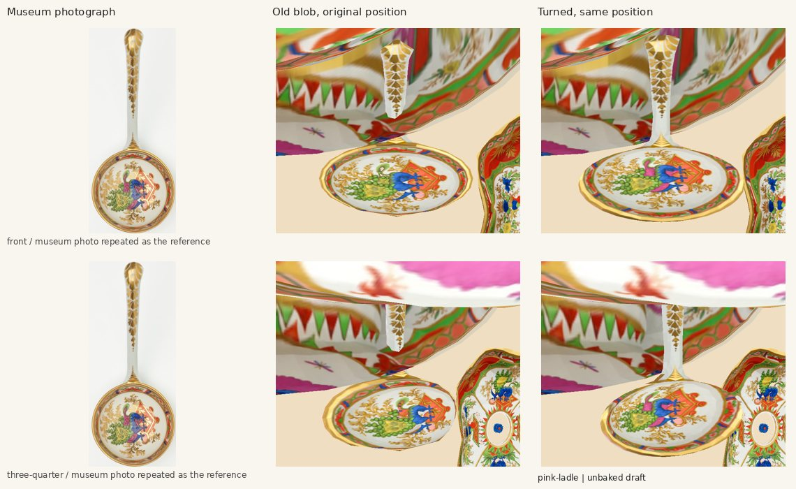

Ten turned works, 22 figures left for the mesh agent. Original origins and rotations; catalogue-sized assemblies. Sources only, unbaked Godot 4.7.2 room draft. No paid generation.
Measurements, checks and faults · All 32 original blobs


Still approximate: small curls, projected side/rear decoration, and catalogue sizes that conflict with filmed proportions. The teapot's recorded 45.7 cm width makes it visibly too wide against its photograph.









